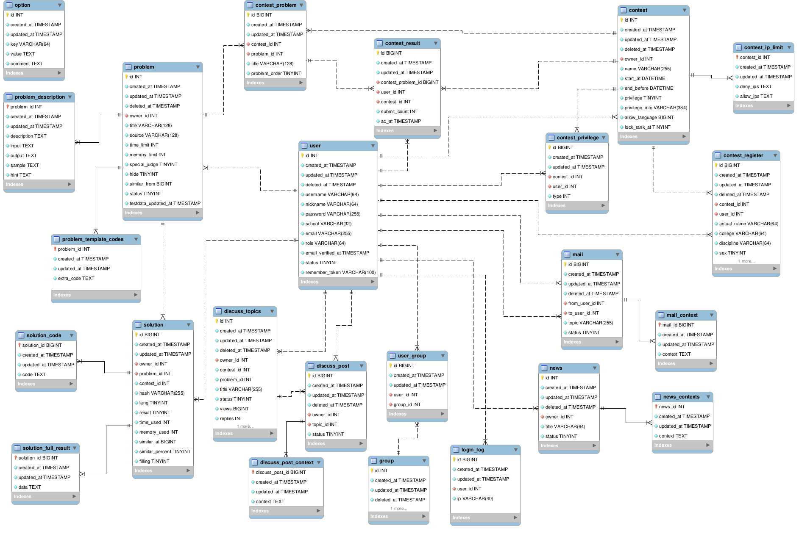
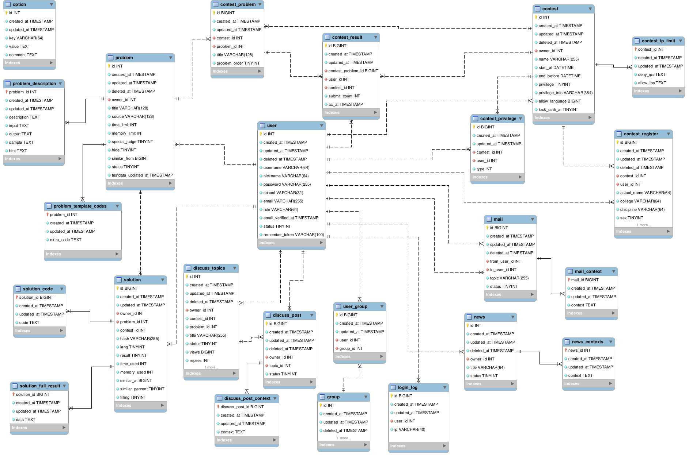

DATABASE
数据库设计，提供一份带外键的SQL(create-sql.sql， 部分有字段微调) 用于本地开发，不建议用于生产。
目前使用的 Spring Boot JPA 无需手动执行 SQL， 只需确保配置的数据库在 MySQL 中实际存在即可。
生产环境中建议使用 OnlineJudge Web Service 端的数据库迁移以导入数据。
想法阐述于数据库表设计

数据库设计，提供一份带外键的SQL(create-sql.sql， 部分有字段微调) 用于本地开发，不建议用于生产。
目前使用的 Spring Boot JPA 无需手动执行 SQL， 只需确保配置的数据库在 MySQL 中实际存在即可。
生产环境中建议使用 OnlineJudge Web Service 端的数据库迁移以导入数据。
想法阐述于数据库表设计
